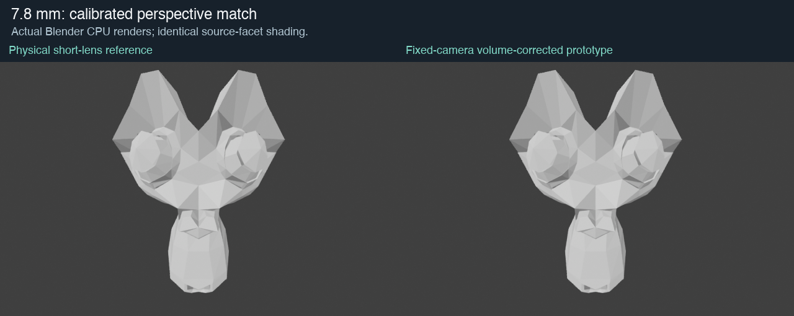
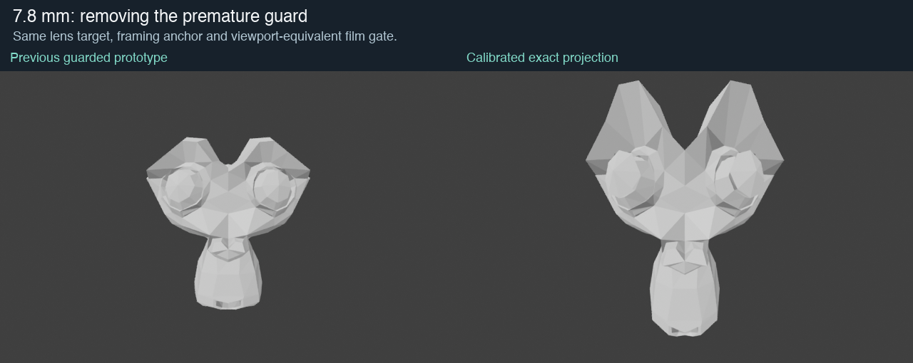
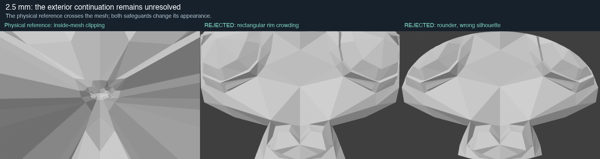

Research prototype only. No installed addon or live scene changed. The new 2.5 mm safeguards are rejected visually.

Read-only MCP confirmed Suzanne has unchanged source/evaluated geometry. Its 7.83254 mm viewport uses a measured horizontal projection equivalent to a 72 mm film gate. Earlier fixtures used a 36 mm gate and a different distance/framing anchor. The old guard also compressed horizontal and vertical coordinates independently, limiting the target too early.
The captured dolly reference is 24.658041 mm at 3.370826 units, with the current 7.83254 mm view at 1.070731 units. The prototype now uses this actual relationship. The 7.8 mm diagnostic render differs by less than 0.001 8-bit intensity levels per channel on average; maximum vertex NDC discrepancy is 2.22e-16. Small raster differences remain. Real shader equivalence is not claimed.

In camera coordinates, with focus depth d and lens ratio r, map to q=(r*x, r*y, z-(1-r)*d), then multiply q by r^(-2/3). This keeps the real camera fixed, reproduces the target projection, preserves the focus-plane framing and has determinant one. It needs no per-frame face-volume reduction in the valid exact branch.
This does not preserve directional thickness, curvature or raycast hits. It also does not solve a target viewpoint crossing the mesh. Closed solid-volume tests use an icosphere; Suzanne's open/nonmanifold volume is only a diagnostic measure.

The same dolly relation predicts 321 of 507 Suzanne vertices behind the virtual camera at 2.5 mm. An exact replay contains camera-plane crossings and clipping. Your requirement to keep all originally in-frame/front vertices eligible therefore needs a changed projection in this range.
The common radial guard removes independent x/y squeezing, but the rectangular version still crowds the rim and the circular version loses the reference silhouette. Both are rejected. No new generic fisheye distortion has been substituted or called an exact lens match.
Translating the mesh away and compensating its lateral size avoids per-vertex flattening. It is mathematically equivalent to a longer effective lens. On the recorded Suzanne fixture, the camera-plane constraint needs approximately 6.30 mm; preserving every originally in-frame vertex needs approximately 7.71 mm. Uniform volume normalization can preserve closed solid volume without changing this image.
Compensating with uniform 3D scale instead preserves the original rays and depth signs, so it cannot rescue behind-camera vertices. This is a numerical feasibility check, not a new installed fix or visual acceptance. Derivation, continuity and real-time considerations.
28 closed-sphere cases (10,242 vertices / 20,480 triangles) pass finite-coordinate, volume, depth-sign and source-relative side-frustum tests, including initially behind-camera vertices. NumPy research-kernel median is 2.17 ms, p95 3.03 ms on this Mac; this is not a GN or viewport benchmark.
Next: an explicitly stylized exterior/occlusion target for the extreme range; then retained GN, shared falloff/companions, actual clip planes, live Uraraka and Windows verification. No local-thickness, curvature, raycast or real-time production acceptance is claimed. Installed preview remains unchanged.
Derivation and limitations · Render metrics · Closed-solid checks · Pixel comparison · MCP reference readback · Your 2.5 mm reference · Your 7.8 mm reference · Overview
Projection background: PBRT projective camera models. Deformation derivation and measurements are this project's research.